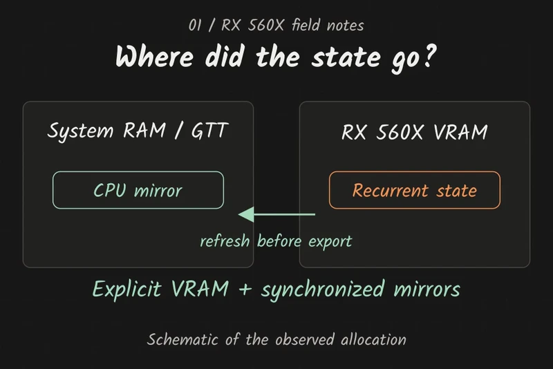
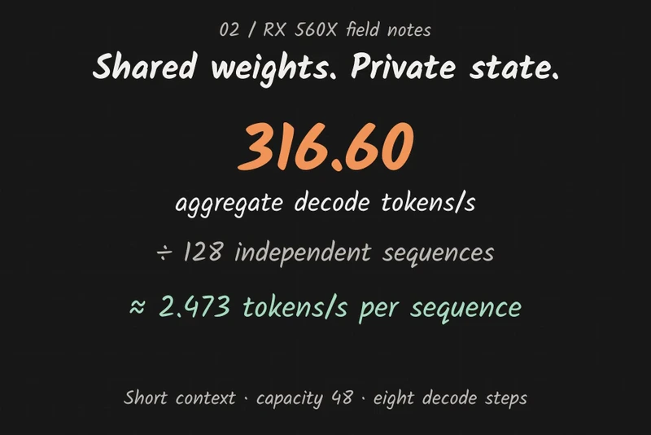
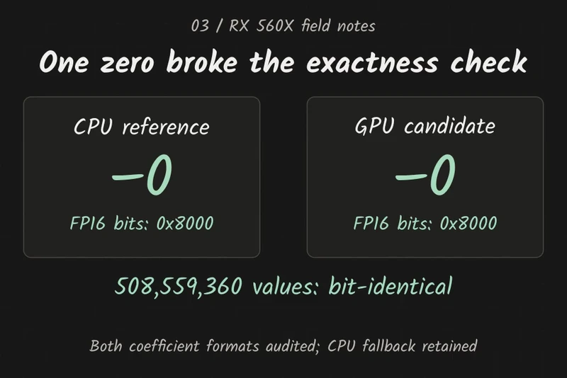

Vulkan · Inference engineering · Open source
Pushing the limits of legacy hardware.
An RX 560X, 4 GiB of VRAM, and a long road from profiling surprises to a merged vllm-vulkan contribution.
I wanted to find out how much useful LLM inference I could get out of the GPU I already had: an AMD Radeon RX 560X with 4 GiB of VRAM. The challenge was to push Qwen3.5-2B through vllm-vulkan, implement the missing execution paths, and keep measuring until I could explain what was holding it back.
The work stretched across memory placement, quantized matrix kernels, recurrent state, attention, batching, CPU overhead, and floating-point edge cases. I used Codex throughout the investigation, with reference implementations, saved benchmark artifacts, and repeated hardware measurements deciding which changes survived. On October 15, 2026, the portable part of that work landed upstream in vllm-vulkan PR #101.
Start with the machine that actually exists
The driver identified the discrete GPU as RADV Polaris11. A read-only kernel/libdrm query reported 14 active compute units, even though using a nominal 16-unit RX 560 specification would have made the theoretical numbers look better. This adapter had no FP16 arithmetic available to the tested runtime, so the model ran with FP32 arithmetic and packed INT4 weights.
I pinned the MLX 4-bit Qwen3.5-2B checkpoint, kept its group-64 affine codes, and reused its tied embedding/output matrix. BF16 scale and bias storage was allowed only when the coefficients were exactly representable. This was text inference; the vision path was outside the benchmark.
14 active compute units; RADV Polaris11.
Group-64 packed codes and verified affine coefficients.
128 independent sequences; short context; greedy decode.
Portable CPU and Vulkan runtime improvements.
The first big win was hiding in memory placement
The initial single-stream decode measurement was 23.825 tokens/s. Profiling later showed recurrent-layer processing consuming roughly 9 ms per token. Fusing convolution, normalization, and GatedDeltaNet recurrence looked promising, but isolated kernel timings failed to explain why the full model was so much slower.
I tested warm-cache assumptions, deliberately evicted state, captured real model inputs, and replayed them in a fresh Vulkan context. The same recurrent update took about 0.041 ms in the replay and 0.506 ms inside the loaded model. That pointed the investigation toward the runtime around the kernel.
DRM fdinfo supplied the missing evidence: roughly 33 MB requested as VRAM was actually resident in system memory. The allocation's device-local, host-visible, host-coherent flags had not established physical residency. Those buffers were crossing a very different memory path from the one the microbenchmark exercised.
Mapped allocations spilled into GTT/system memory inside the model.
Unmapped GPU buffers, synchronized copies, and residency telemetry.
Explicit unmapped VRAM and synchronized CPU mirrors brought requested and resident totals into agreement. Recurrent GPU time fell from about 9 ms to 0.8 ms per token. One early run reached 59.546 tokens/s.
Then prefix restoration failed. Ordinary generation was correct, but prefix export serialized a stale CPU mirror of the recurrent state. Refreshing the mirror from VRAM fixed the lifecycle path. All 54 reset/import comparisons passed, including replacing a different prefix at the same length. The corrected build measured 56.117 tokens/s in its later session; I kept the earlier 59.546 result labeled as an observation from the build with the prefix bug.

Correctness had to reach beyond plausible text
A model producing readable text was too weak a test. I compared full logits against an independent Transformers FP32 implementation of the same quantized checkpoint, and exercised recurrent state, attention caches, positions, masks, reset, prefix import, and switching execution paths.
Those comparisons exposed an inherited normalization discrepancy: GatedDeltaNet's L2 epsilon was being added to the mean of squared values instead of their sum. Correcting it changed the reference semantics, so saved prefixes also needed a new fingerprint. The canonical runtime matched all 14 checked Transformers argmax values with maximum relative L2 logit error about 2.81×10⁻⁶.
That correction also changed how I reported results. Measurements from before the fix stayed historical. Later canonical results had their own source revision, flags, and numerical checks. A speed table is easier to read when it hides these distinctions, but less useful to anyone trying to reproduce it.
Build the execution path, then share the weights
The experiment grew into a complete dense GPU forward path: fused recurrent operations, tiled short-context attention, quantized matrix specializations, device intermediates, and native greedy selection. The principal decode graph recorded all 24 layers into one GPU submission. Full GPU prefill reduced one measured path from 157 submissions to one; native first-token selection later avoided sending the entire vocabulary back through Python.
For aggregate throughput, independent batching let sequences reuse one weight set. Each slot kept its own convolution window, recurrent state, KV cache, and position. Tests parked and resumed rows, reset one slot without disturbing its neighbors, and switched between GPU and existing execution paths.
Batch 64 reached a canonical unprofiled median of 259.632 aggregate tokens/s. Wider output-head tiles, aligned matrix specializations, split-K work, and validated four-weight prefetching each needed shape checks and matched timing. Increasing the batch size could consume more VRAM and produce worse throughput; it was never an automatic win.
The output head offered another memory saving. Greedy decoding only needs the winning vocabulary index, so an optional fused reduction retained tile maxima and original indices. At batch 128, its output temporary fell from 121.25 MiB to about 1.9 MiB. This became an explicit greedy-only API contract: requesting full logits or an unavailable fallback had to fail before changing live state.

The attractive ideas that did not win
Several changes passed their numerical checks and still lost on the hardware. XOR shared-memory bank mapping moved a head kernel from 51.637 to 75.934 ms. Padding moved another comparison from 52.011 to 54.504 ms. Driver assembly showed separate LDS reads where the original bank-conflict hypothesis had assumed paired reads; the address transformations added instructions without buying the expected benefit.
A compatible half-storage loader used packed integer reads and FP32 expansion because the existing FP16-arithmetic shader could not run on this adapter. It passed the reference checks, but the fastest measured half-storage head was slightly slower than INT4: 48.090 versus 47.938 ms at batch 64. Eight-weight loading, operand preloading, and dense gate/up fusion also delivered small or absent end-to-end gains and stayed experimental.
Some large or repeated dispatch experiments triggered graphics-ring timeouts and soft recovery. I bounded benchmark submissions and reran conformance after recovery. The cause remained unresolved; later successful checks did not establish long-run reliability for those larger workloads.
Use short context to change the state cost
For short contexts, I implemented an explicit compact FP32 history for GatedDeltaNet: normalized keys, delta vectors, and decay factors instead of the full recurrent matrix. The formulation is mathematically equivalent, but regrouping floating-point operations required fresh error checks. It passed 390 CPU/dense-GPU comparisons through 64 steps, including masks and resumed slots.
A matched batch-64 comparison improved from 274.252 to 298.520 aggregate tokens/s with identical generated IDs. At batch 128, capacity 48, and prompts of 16, 24, or 32 tokens, the compact-state checkpoint reached 308.873 aggregate tokens/s. Longer contexts kept the dense representation; the compact implementation's capacity limit was part of its contract.
Next came CPU recording overhead. Batched attention preparation removed 762 row dispatches per batch-128 step. Shared KV allocations and batched KV writing/attention decoding removed another 1,524. Together they removed 2,286 dispatches while preserving live row/batched switching. Their matched throughput gains were modest—1.14% and 0.63%—because GPU matrix execution still dominated.
Half a billion values, and one negative zero
CPU embedding decoding still allocated an intermediate FP16 vector before producing FP32 values. A direct decoder eliminated that temporary and used shifts and masks for the common four-bit, group-64 layout. It preserved the separate affine operations and the inherited FP16 round-trip. Every one of the checkpoint's 508,559,360 embedding values matched the original decoder bit for bit.
The experimental CPU specialization reduced its isolated median decode cost by roughly half. A six-run same-model comparison improved total batch throughput by 1.51%, with clock and GPU-time variation also contributing. That distinction mattered: a large local speedup can have a small whole-model effect.
Moving embedding lookup onto the GPU reused the resident tied weights and replaced hidden-vector uploads with token IDs. The stress fixtures then caught a tiny negative coefficient turning into positive zero. Exactness required explicit FP32 denormal, signed-zero, and round-to-nearest-even controls, together with device-property gates and CPU fallbacks.
After the fix, both coefficient formats matched all checkpoint values exactly and all 1,968 standalone fixtures passed. A paired full-model comparison improved from 314.769 to 317.010 aggregate tokens/s, primarily through host-side savings. Fresh unprofiled runs produced 316.297, 316.600, and 316.848 tokens/s: a median of 316.600, with identical IDs and matching requested/resident VRAM observations.

Read the numbers with their workload attached
| Workload | Measured rate | Scope |
|---|---|---|
| Initial single-stream decode | 23.825 tokens/s | Historical baseline, before canonical normalization correction. |
| Canonical single-stream decode | 58.080 tokens/s | Prompt 64; median; profiling disabled. |
| Native prefill + first-token selection | 350.105 prompt tokens/s | Prompt 128; five repetitions; native selection API. |
| Canonical batch 64 decode | 259.632 aggregate tokens/s | Independent sequences; five repetitions; profiling disabled. |
| Latest compact batch 128 decode | 316.600 aggregate tokens/s | Capacity 48; prompts 16/24/32; eight decode steps; three repetitions. |
At 128 sequences, 316.60 aggregate tokens/s is about 2.473 tokens/s per sequence, or about 404 ms per batch step. It is a short-context throughput result. Loading, tokenization, seeding, reference validation, and warmup were excluded; EOS did not shorten the fixed-step workload. These rows span different source checkpoints and sessions, so they do not form a controlled cumulative speedup comparison.
The measurement record preserves selected benchmark fields, source-file hashes, checkpoint identity, and timing notes. The experimental source checkpoint was saved as 8326bcf. Its native graph, kernels, and APIs were separate from the portable PR.
Turn a machine-specific investigation into an upstream contribution
I extracted the changes that improved the existing runtime without selecting Polaris tiles, a fixed device index, or the experimental Qwen batch graph. The CPU decoder retained exact rounding. Descriptor recording used bounded stack arrays. Pipeline creation checked enabled capabilities and loaded aligned SPIR-V words. Explicit memory dependencies covered compute, transfers, and host reads.
Review exposed interactions that the first extraction missed. Filtering unsupported shaders also meant GEMM callers had to choose an available FP32 fallback with its matching tile geometry. That fallback still expected F16 input, so callers needed weight-format guards, the correct model's CPU weights, and format-aware GPU paths when lean-host mode omitted host tensors. The shared, Qwen, and Gemma paths all needed attention.
Other fixes gated typed subgroup operations, made copied snapshots visible to host reads across submission modes, and deduplicated descriptor setup for zero-offset and offset entry points. The final portable CPU benchmark measured 2.553× median embedding-decoder speedup over eight alternating runs. It was a separate benchmark from the experimental branch's earlier roughly 2× result.
Final validation recorded 300 combined Gemma/Qwen CPU tests and 12 Vulkan conformance tests on each adapter, exercising 18 quantized kernels on RX 560X and 20 on Vega 8. Default and supported feature-slice build checks passed; the existing optional debug-api feature still referenced a missing source file. The upstream evaluation document records the scope and reproduction commands. PR #101 merged on October 15, 2026.
Pushing the limit also means admitting where it is unproven
A checksum-verified bulk VRAM read measured 85.621 GB/s. Streaming the active weights, recurrent state, and context-64 KV once suggested an optimistic single-stream bandwidth ceiling around 78 tokens/s for that layout. It excluded unpacking, arithmetic, dependencies, launches, and CPU work. Batching changed the calculation because weights could be reused.
The actual 14-unit count also changed the raw FP32 peak calculation. Later assembly showed no spills in the selected output head, but static register counts and nominal FLOPS could not establish a cycle-level bound. Matrix execution remained dominant. I had not proved that the final branch was near the global theoretical limit.
What I did have was a much more capable inference path on a 4 GiB legacy GPU, a record of the changes that helped and failed, and portable improvements accepted upstream. The satisfying part was tracing a missing fraction of a millisecond all the way from physical residency or a signed zero to a result I could defend.